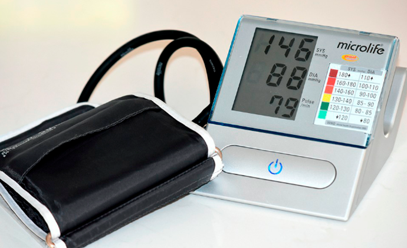
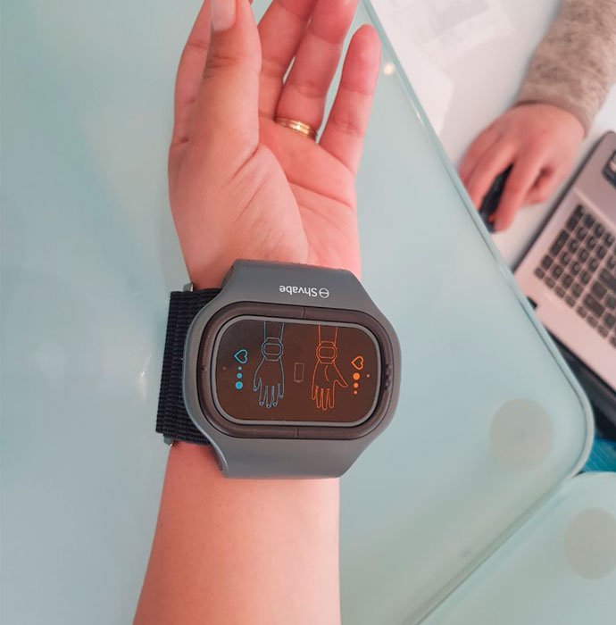

Hogyan szabaduljunk meg a magas vérnyomástól tabletták és injekciók nélkül?
Csodás napot kívánok, kedveskéim!
Anna vagyok, 52 éves és tapasztalt hipertóniás beteg. Én sokáig és boldogan terveztem élni ezzel a diagnózissal is, amíg egyszer csak nem tört rám egy hipertóniás krízis. Ez az eset rákényszerített arra, hogy felülvizsgáljam és megváltoztassam a hipertóniám kezeléséhez való hozzáállást. Itt pedig meg is jegyezném, hogy a vérnyomásom már régen nem ment 130/80 fölé. Tudni szeretnétek, hogy értem ezt el?

HOGYAN ALAKULT KI A MAGAS VÉRNYOMÁS
Sportoló voltam, fiatalkoromban úsztam, egészséges életmódot éltem és mindig képben voltam az ilyen dolgokkal. A vérnyomásom egy kicsit magas volt, de még a normális kereteken belül. Én nem ismertem az édesapámat, de anyukám azt mondta, hogy magas vérnyomásos volt. Úgy látszik, a magas vérnyomás az egyetlen „ajándék“, ami nekem jutott az apámtól.
28 évesen elkezdtem észrevenni, hogy nem csak a dupla kávétól vagyok rosszul, de úgy teljesen véletlenül is. Amikor ezek az esetek egyre gyakrabbá váltak, elmentem egy orvoshoz.

MINT ÉGBŐL A VILLÁMCSAPÁS, CSAK ÉPP NEKEM A SZíVEMBE
Nagyon nehéz napom volt. Idegesen futkároztam a városban, idegeskedtem, kávét ittam és csak álmodni mertem arról, hogy alhassak egy kicsit. Már otthon a fejem is fájni kezdett, a szemem úgy tűnt, hogy kiesik a helyéről. A hányinger kerülgetett, és a lábaim is olyan keménnyé, tömörré váltak.
Ez körülbelül 15 percig tartott, de számomra egy örökkévalóságnak tűnt. Nagyon rosszul voltam. Aztán az utolsó erőt is kifacsartam magamból, hogy odamásszak a telefonhoz és kihívjam a mentőket. És ebben a pillanatban el is vesztettem az eszméletem.

VISSZA A TÚLOLDALRÓL
Már a kórteremben tértem magamhoz. A felépülésem hosszú gyógyulásba, gyógyszerek végtelen szedésébe és fájdalmas eljárásokba került. Amikor kijöttem a kórházból, tudtam, hogy csak egy hajszálnyira voltam attól, hogy meghaljak. Ha az orvosok nem érkeztek volna ki időben, akkor meg is haltam volna.
Miután kijöttem a kórházból, drága gyógyszereket kezdtem el szedni, de hatásuk nem sok volt. Én úgy éreztem, hogy egyre rosszabbul vagyok.

Több orvoshoz is elmentem, de mindegyik ugyanazokat a gyógyszereket írta fel, egyforma procedúrákat ajánlottak. Folyton idegeskedtem amiatt, hogy nincs erőm, minden nappal csak rosszabbul éreztem magam. A vérnyomásom megint elkezdett ugrálni, a gyógyszereim pedig már egyáltalán nem segítettek. Elkeseredésemben nem tradicionális módszerekhez is fordultam, de csak itt jött az igazi elkeseredés. A gyógyfüvek és a teák bár ideiglenesen hatottak, a homeopátiának túl sok eredménye nem volt. Nem tudtam, mit tegyek.
Idegesebb lettem, álmatlanság és szörnyű fejfájás gyötört. Folyamatosan csak arra gondoltam, hogy az az eset végzetes is lehetett volna, és ki tudja, túlélem-e a következő ilyen rohamot.

A KEZELÉS KERESÉSE
Amikor ismét átléptem a kórház küszöbét, a kijáratnál véletlenül belebotlottam egy barátomba, aki nővérként dolgozott ott. Elbeszélgettünk, én s magas vérnyomásra panaszkodtam neki, mire ő felhúzta a blúzának az ujját, és megmutatott nekem egy kis eszközt a csuklóján. Mint kiderült, ő is, pont mint én, a magas vérnyomástól szenved, és neki ez az eszköz segített, hogy jobban érezze magát.

A barátom azt is elmondta, hogy a viselése első pillanatától kezdve elmúlt a fejfájása, az időjárás miatti rosszullétek, és sokkal vidámabbnak érzi magát. Ez a karkötő az orvostudomány legújabb fejlesztése, amelynek a hatékonysága sokkal magasabb, mint a masszázsok, a gyógynövények és az alternatív orvoslás együttvéve. A készülék kis, rövid impulzusokat továbbít, ezáltal serkenti a vérkeringést és feszesíti az ereket.
Ez lehetővé teszi a vérkeringés felgyorsítását: idővel az artériás hipertóniát is elmulasztja, a vérnyomás a normális értékek közé kerül. Az agy vérellátással teljes mértékben megoldódik, a szívizom elegendő mennyiségű vért fog pumpálni, ami azt jelenti, hogy a stroke és más hipertóniával járó betegségek kockázata a minimálisra csökken.
Nem tudtam elhinni, hogy egy egészségügyis egy olyan dologról mesél nekem, amely el vannak rejtve a magas vérnyomásban szenvedő emberek elől!

Hogy őszinte legyek, az elején nehéz volt hinni a dologban. Mi van, ha ez csak egy kitaláció, és ő csak egy kereskedelmi ügynök?
Hazajöttem és rákerestem erre a karkötőre, majd végigolvastam az összes talált információt. Ezt találtam.
Különböző nagyságú elektromos impulzusok hatást fejtenek ki a gerincvelő ideggyökereire, így erősítve az ereket a jobb vérkeringés érdekében. Amikor a karkötő egy impulzus sorozatot indít el, az idegrostok mozgásba jönnek (gerjedni kezdenek). Ennek a hatásnak köszönhetően javul a test mikrocirkulációja és a bőr szerkezetét és működését megőrző sejtek táplálása is fokozódik.
A tudományos adatok, amelyeket a szívbetegek lelkes értékelései is alátámasztanak, meggyőztek, és megrendeltem magamnak a készüléket.
Néhány napos használat után teli energiával ébredtem, kiváló hangulatban és fejfájás nélkül... Eleinte még nem is értettem, mi történt, de amikor rájöttem, hogy semmim sem fáj, és nagyszerűen érzem magam, ráeszméltem: ez a karkötő és annak terápiás hatása.

Már majdnem egy év telt el azóta, hogy először megtapasztaltam magamon is a karkötő hatását, és ez alatt az idő alatt az alvás is jóval kellemesebb lett, a fejfájás, a szédülés és az émelygés pedig teljesen elmúlt. Hihetetlen frissesség és erő jelent meg bennem, ilyet már nagyon rég nem éreztem.
Ha azelőtt a szokásos vérnyomásom 170/100 volt, a karkötővel már nem emelkedik 130/80 fölé. Ez a mai napig így van, tehát magabiztosan mondhatom, hogy a készülék valóban megmentett a magas vérnyomástól.
Azóta, hogy elkezdtem használni ezt a karkötőt, még a fejem sem fáj, egyáltalán, nem úgy, mint régen. Szavakkal nem tudom kifejezni, milyen csodálatos színekben látom a világot a magas vérnyomás nélkül!
Ismét aktív lettem, sokat sétálok, könnyen viselem a repüléseket is, sokat olvasok, és végre egészséges embernek érzem magam!

HOL LEHET HOZZÁJUTNI A KARKÖTŐHÖZ
Örülök, hogy sok ember törekszik elkerülni azokat a hibákat, amelyeket én elkövettem, és még az első riasztás előtt elkezd foglalkozni az egészségével. Mindenkinek, aki magas vérnyomásban vagy más érrendszeri problémák miatt szenved, meghagyom itt a linket, amely arra a webhelyre mutat, ahol megrendeltem a készüléket. a gyártó honlapján kedvezménnyel rendelheti meg a karkötőt. Vigyázzatok magatokra, kedveskéim!


Heti hírlevél
Iratkozzon fel a független hírlevélre
a LiveJournal legjobb bloggereitől